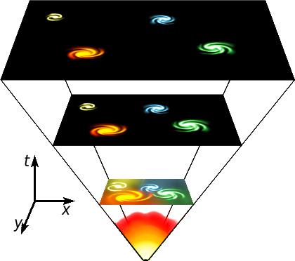

and you wouldnt percieve, from nothing to a bang (From where or why?) to an entire universe of stars and galaxies, as realms of fantasy?
The Big Bang Theory is being refined all the time by scientists. I don’t claim to know the ins-and-outs of the entire work going into it, nor the complexities of the Theory itself, but it is widely acknowledged as being scientifically sound (even if said science is purely theoretical).
There was a second theory I read about a while back (perhaps some of the more scientifically gifted can enlighten me) that revolved around the idea that black holes within our universe can create another universe (sort of like a parent/child model), and I believe this has been coined the ‘Multiverse Theory’. The last I read was that this theory was going a long way to helping solidify the Big Bang Theory.
I apologise to all the physicists reading that.
I think it’s more reasonable than some invisible hobbyist that created the universe for nothing more than shits and giggles.
Also, there’s a significant amount of stuff that points towards the big bag. If you want, I’ll go ahead and list 'em.
EDIT: There’s also evidence that suggests that the earth is as is because of a collision (hence the moon originally being part of earth) but that don’t mean it was two asteroids. Could have been, sure, but more likely than not since the combined momentum and whatnot would have to be juuuust right in order that the resulting matter wasn’t flung out of orbit or into the sun.

I’ve learnt a lot to night, the universe is basically a big loaf of bread that is constantly expanding (Rising) and “could” then have started out with some sort of explosion (Hope I got that right), but still whats not to say that explosion (Or fire) isn’t in some sense a sort of “god”? I don’t mean to keep banging on about it, but that is the debate. Seeing the bigger picture I think is frightening
Seeing the bigger picture is what physicists try to do, and do pretty well. So you’re proposing god is an explosion?
Also, it’s fairly patronising to explain the Big Bang to people who have just been trying to tell you about it. It extremely likely that it’s due to an explosion because it is expanding from a focal point and cooling down.
sorry bud, I was just trying to see if I got it right
but what im saying is god is suppose to be the creator of all life, yes? so why not the fire that sits at the heart (Or bottom) of the universe, however you see it
There is no fire at the centre of the universe.
Though it looks like there’s a fire at the the bottom of that picture, you need to see the t axis represents time, and the x and y ones represent space, so the explosion was very distant in the past, and the universe was small in space, and as we go higher in the t axis (upwards on the diagram) which represents further in time, we see an expansion in space of the universe (seen as subsequent planes becoming larger and larger in the x & y axis).
Not to mention saying “god” caused the Big Bang to happen tells us nothing about “god.” It’s basically saying “We don’t know…therefore god.” Might as well call it “dbcvtyns” instead, it has the same meaning.
Soup, if this is what you’re concerned about, ignore it. its all fake.
Seriously now. well, lets move on. This thread should be renamed to ‘the religion thread’.
See the thing is, you say there is a god, thus the burden of proof is upon you, we simply call BS when you fail to provide any.
Ar hadn’t noticed that doh, what an idiot
But what I cant get my head around is why did that happen, what caused this explosion, surely that couldnt have been the start of time itself? And I refered to the explosion as a possible “god”, because a) it created all life and b) their is no real explantion of what “god” actually is (Which is partly why I withdrew my arguement against the atheists having to prove he doesn’t exsist, because theirs no defined explantion of what “god” is)? God could litteratly be anything, assuming of course he exsists
Everything I have learned and read about religion and christianity in particular indicates that the belief in a so-called God was never any more than a device of mind control, devised by the more clever people of a certain population to gain power over the weaker minded. The fact that those efforts were and are still very successful speaks for itself.
The fact that religion uses circular logic to explain itself is alarming enough to me to better ignore it and only trust my own judgement, flawed as it might be - it is still superior to religious belief, which essentially functions this way:
You tell me something I should believe in, and I don’t ask why, I just do it.
That might be good enough for soldiers and very simple people, but not for an open-minded person capable of thinking logically.
I admit that the whole universe could have been created on purpose by some supreme being(s). It could even be part of an experiment, for all we know. But chances are very, very high that none of the gods ever created by the human conscious have anything in common with those beings.
I also admit that every large religion has some very decent parts in their doctrine. Usually those where they say you should treat others like you would want to be treated, and you should help people in need if you can. But this small number of lovely rules to live by usually drowns in a sea of utter bullshit which ultimately leads to religious people doing exactly the opposite of being nice to other people. Which is why I despise religious doctrines and all people who follow them strictly.
If your religious belief leads to you treating your neighbors, loved ones and even foreign and strange people fairly, I accept that and am glad for it. You are obviously doing it for the wrong reasons (wanting to earn a place in “paradise”, afraid of punishment in hell or whatever indoctrinated desire or fear drives your actions), but at least you are doing it.
I just usually experience religiously active people to be very very wrong about very important matters in life, which ultimately leads to them hurting other people (or at least their feelings) in a totally unnecessary manner.
I don’t have anything against belief - as long as you believe in the right things (which would be things that make you treat your fellow humans and your environment fairly, and things that make you reflect the consequences of your actions before acting carelessly). I just can’t stand religious doctrine. Dogmatic believers are some of the worst people on this planet, and usually (as far as I have experienced) they are also the worst hypocrites.
Oh, and if anyone still finds it funny to mock me for believing conspiracy theories, I must disappoint you. My new years resolution was to rethink my attitude towards such things, and I have come along to abandon them, because they tend to use circular logic and employ essentially the same techniques and arguments that were used by inquisitors during the witch hunting period and by the Nazis during the antisemitist pogromes in the Third Reich.
The assumption is:
The government is lying to us (Witches are among us; the Jews are our demise, etc.pp.)
Lack of evidence leads all the way round to the same assumption:
The government is withholding information, because it is lying to us.
It took me long enough to discover how flawed conspiracy theories are. I apologize for any harassment of other users that I have certainly caused by clinging to this shit. Now I pray you have the decency to give me credit for abandoning it and don’t bother me with it any more, at least if you have read this post of mine.
Why did it happen? We don’t know. There is absolutely no evidence that we have currently that explains it.
But here’s something for you also not to get your head around:
If a God did it, then what caused God? Super God? What caused Super God? Super Duper Super God?
…and where do we go from there?
…personally, I believe it’s turtles, all the way down.[/SIZE]
you are assuming of course that if there is a god it is some sort of “person” or “being”, but it could equaly be a thing like, light, or the “bang” itself
It didn’t create life. That’s like saying cigarette lighters cause cancer. Also, you have to define god, because I’m pretty sure a lot of people would disagree with it being an explosion.
I’m pretty sure they teach all this stuff in physics. Well, obviously not the god stuff, the big bang stuff. How can you not know any of this?
I know it’s fake: that’s why I’m asking for some kind of evidence. Also, “concerned” seems an odd choice of words.
Abrahamic (Judaism+Christianity+Islam) religions, which make up the vast majority of the planet’s human population, refers to it as a “person” or “being”. I assume nothing.
If God is something like light or the Bang itself, then why refer to it as a god?
Found this on the interwebs,
“God is a spirit (John 4:24), and so His appearance is not like anything we can describe. Exodus 33:20 tells us, “But,” he said, "you cannot see my face, for no one may see me and live.” As sinful human beings, we are incapable of even seeing God in all His glory and living. His appearance is utterly unimaginable and too glorious to be safely perceived by sinful man.
The Bible describes God appearing to people on various occasions. These should not be understood as describing exactly what God looks like, but rather as God revealing Himself to us in a way that we can understand. Two passages that powerfully describe God’s appearance are Ezekiel 1:26-28 and Revelation 1:14-16.
Ezekiel 1:26-28, “Above the expanse over their heads was what looked like a throne of sapphire, and high above on the throne was a figure like that of a man. I saw that from what appeared to be his waist up he looked like glowing metal, as if full of fire, and that from there down he looked like fire; and brilliant light surrounded him. Like the appearance of a rainbow in the clouds on a rainy day, so was the radiance around him.” Revelation 1:14-16, “His head and hair were white like wool, as white as snow, and his eyes were like blazing fire. His feet were like bronze glowing in a furnace, and his voice was like the sound of rushing waters. In his right hand he held seven stars, and out of his mouth came a sharp double-edged sword. His face was like the sun shining in all its brilliance.”
These passages represent Ezekiel’s and John’s best attempts at describing the glory of God that they witnessed. They had to use symbolic language and similes to describe that for which human language has no words, i.e., “what appeared like,” “like the appearance,” “he looked like,” etc. We do know that when we are in heaven, “we shall see Him as He is” (1 John 3:3). Sin will be no more, and we will be able to perceive God in all His glory."
this is in no way gives off the impression god is human or even a being, but rather a “spirit”
Ezekial was tripping his balls off, that is some awesome descriptive writing…
You do realize that the bible and it’s writings aren’t PROOF of anything right? So far as we know it’s just as fictional as any other piece of literature.
The very concept of a being that exists which there is no way to describe accurately or perceive means you have no way of offering legitimate ways to convince anyone who doesn’t already just believe. Why does doubting Thomas get proof from jesus of his divinity, but I am not given this benefit? He was one of the disciples and he didn’t believe the claims of the other disciples. Meanwhile me, in a totally separate and distant culture, I am expected to just believe based on out of date texts, and years of tradition? I just don’t see any legitimate reason why I should, and why it wouldn’t be a little silly of me to just accept that. I just wish some perspective could be gained here. Would religious people be accepting of the scientific logic presented to them every day if we refused to show evidence of it functioning?